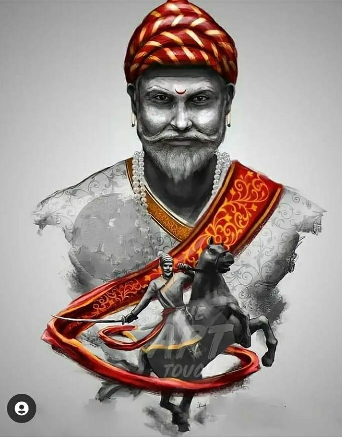
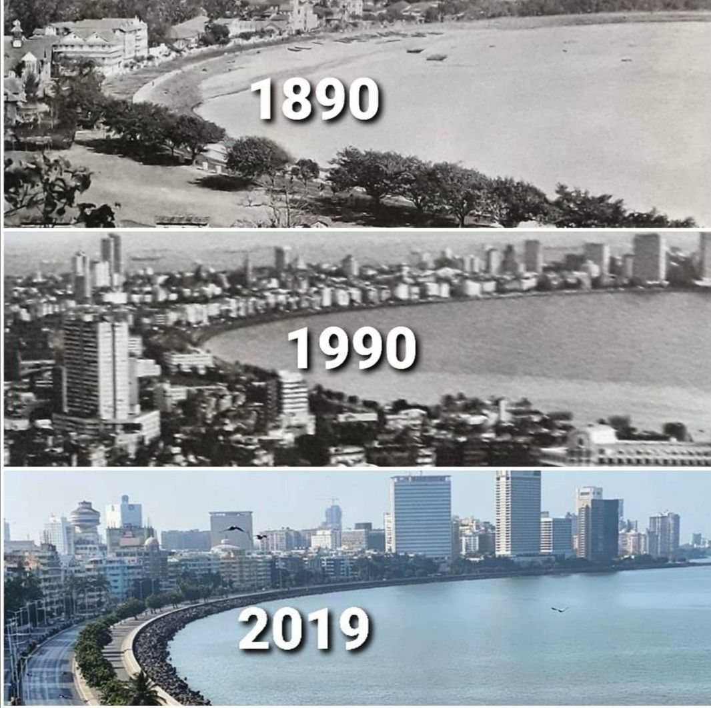
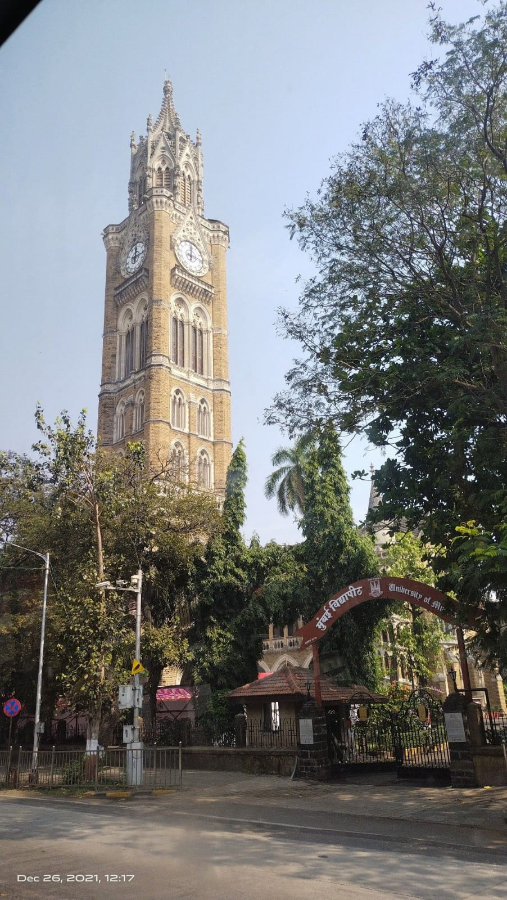

The name of the city, Mumbai is derived from patron deity the Mother Goddess Mumba Devi, worshiped by the earliest inhabitants the Kolis.
The District Mumbai City is situated on the West coast of India between 18˚ 52′ and 19˚ 04′ North latitudes and 72˚47′ and 72˚54′ East longitudes. It is surrounded on three sides by water, the open Arabian Sea to the West and South and Thane creek to the East. To the North it is bordered by Mumbai (Suburban) District.
It is the Southern part of Greater Mumbai Municipal corporation, which covers an area of 157.0 sq.kms as per the Surveyor General of India and has a population of 30,85,411 persons as per the Census 2011.
The literacy rate of Mumbai district is 89.2 percent. The sex ratio of Mumbai district is 832.
Humans have inhabited Mumbai since the Stone Age.[citation needed] The Kolis and Aagri (a Marathi fishing community[1]) were the earliest known settlers of the islands. The Maurya Empire gained control of the islands during the 3rd century BCE and transformed them into a centre of Hindu-Buddhist culture and religion.[citation needed] Later, between the 2nd century BCE and 9th century CE, the islands came under the control of successive indigenous dynasties: the Satavahanas, Abhiras, Vakatakas, Kalachuris, Konkan Mauryas, Chalukyas, Rashtrakutas, and Silharas.[citation needed]
King Bhimdev established his kingdom in the region in the late 13th century, and brought many settlers to the islands.[citation needed] The Muslim rulers of Gujarat captured the islands in 1348, and they were later governed by the Gujarat Sultanate from 1391 to 1534. The Treaty of Bassein between the Portuguese viceroy Nuno da Cunha and Bahadur Shah of the Gujarat Sultanate placed the islands into Portuguese possession in 1534.
The islands suffered incursions from Mughals towards the end of the 17th century.[citation needed] During the mid-18th century, the city emerged as an important trading town, with maritime trade contacts with Mecca and Basra.[citation needed] Economic and educational development characterised the city during the 19th century with the first-ever Indian railway line beginning operations between Mumbai and neighbouring Thane in 1853. The city became a strong base for the Indian independence movement during the early 20th century and was the centre of the Rowlatt Satyagraha of 1919 and Royal Indian Navy Mutiny of 1946.[2] After India's independence in 1947, the territory of Bombay Presidency retained by India was restructured into Bombay State. The area of Bombay State increased, after several erstwhile princely states that joined the Indian union were integrated into Bombay State.
In 1960, following protests from the Samyukta Maharashtra movement, the city was incorporated into the dominion of the newly created Maharashtra State from Bombay State. The city has also faced some unfortunate events like the communal riots of 1992–93, while the bombings of 1993 caused extensive loss of life and property. The city was renamed Mumbai on 6 March 1996.[citation needed]
'Panoramic View of Mumbai taken from Malabar Hill' (1862), a watercolour on 5 folding pages, by Mary Ann Scott-Moncrieff
Contents
1 Early history
1.1 Pre-historic period
1.2 Age of Indian empires
2 Islamic period
3 Portuguese period
4 British period
4.1 Struggle with native powers
4.2 City development
4.3 Indian freedom movement
5 Independent India
5.1 20th century
5.2 21st century
Early history
Pre-historic period
The seven islands of Mumbai with their anglicised names
See also: South Asian Stone Age
Geologists believe that the coast of western India came into being around 100 to 80 mya, after it broke away from Madagascar. Soon after its detachment, the peninsular region of the Indian plate drifted over the Réunion hotspot, a volcanic hotspot in the Earth's lithosphere near the island of Réunion. An eruption here some 66 mya is thought to have laid down the Deccan Traps, a vast bed of basalt lava that covers parts of central India. This volcanic activity resulted in the formation of basaltic outcrops, such as the Gilbert Hill, that are seen at various locations in the city. Further tectonic activity in the region led to the formation of hilly islands separated by a shallow sea.[3] Pleistocene sediments found near Kandivali in northern Mumbai by British archaeologist Malcolm Todd in 1939 indicate habitation since the Stone Age.[4] The present day city was built on what was originally an archipelago of seven islands of Mumbai Island, Parel, Mazagaon, Mahim, Colaba, Worli, and Old Woman's Island (also known as Little Colaba).[5] The islands were coalesced into a single landmass by the Hornby Vellard engineering project in 1784. By 1000 BCE, the region was heavily involved in seaborne commerce with Egypt and Persia.[6] The Koli fishing community had long inhabited the islands.[7] They were Dravidian in origin and included a large number of scattered tribes along the Vindhya Plateau, Gujarat, and Konkan. In Mumbai, there were three or four of these tribes. Their religious practices could be summed up as animism.[8]
Age of Indian empires
Main article: History of Mumbai under indigenous empires
Kanheri Caves served as a centre of Buddhism during ancient times
The islands were incorporated into the Maurya Empire under Emperor Ashoka of Magadha in the third century BCE. The empire's patronage made the islands a centre of Buddhist religion and culture.[6] Buddhist monks, scholars, and artists created the artwork, inscriptions, and sculpture of the Kanheri Caves in the mid third century BCE[9] and Mahakali Caves.[10] After the decline of the Maurya Empire around 185 BCE, these islands fell to the Satavahanas.[11] The port of Sopara (present-day Nala Sopara) was an important trading centre during the first century BCE,[12] with trade contacts with Rome.[13] The islands were known as Heptanesia (Ancient Greek: A Cluster of Seven Islands) to the Greek geographer Ptolemy in 150 CE.[14] After the end of the Satavahana rule in 250 CE, the Abhiras of Western Maharashtra and Vakatakas of Vidarbha held dominion over the islands. The Abhiras ruled for 167 years, till around 417 CE.[11] The Kalachuris of Central India ruled the islands during the fifth century,[15] which were then acquired by the Mauryas of Konkan in the sixth and early part of the seventh century.[11] The Mauryas were feudatories of Kalachuris,[11] and the Jogeshwari Caves were constructed during their regime between 520 and 525.[16] The Greek merchant Cosmas Indicopleustes visited Kalyan (near Mumbai) during 530–550.[17] The Elephanta Caves also dates back to the sixth century.[18] Christianity arrived in the islands during the sixth century, when the Nestorian Church made its presence in India.[19] The Mauryan presence ended when the Chalukyas of Badami in Karnataka under Pulakeshin II invaded the islands in 610.[20] Dantidurga of the Rashtrakuta Dynasty of Karnataka conquered the islands during 749–750.[11]
Banganga Tank and Walkeshwar Temple
The Silhara dynasty of Konkan ruled the region between 810 and 1260.[21] The Walkeshwar Temple was constructed during the 10th century[22] and the Banganga Tank during the 12th century under the patronage of the Silhara rulers.[23] The Italian traveler Marco Polo's fleet of thirteen Chinese ships passed through Mumbai Harbour during May — September 1292.[17][24] King Bhimdev founded his kingdom in the region in the late 13th century[25] and established his capital in Mahikawati (present day Mahim).[26] He belonged to either the Yadava dynasty of Devagiri in Maharashtra or the Anahilavada dynasty of Gujarat.[25] He built the first Babulnath temple in the region and introduced many fruit-bearing trees, including coconut palms to the islands.[27] The Pathare Prabhus, one of the earliest settlers of the city, were brought to Mahim from Patan and other parts of Saurashtra in Gujarat around 1298 by Bhimdev during his reign.[28] He is also supposed to have brought Palshis,[29] Pachkalshis,[29] Bhandaris, Vadvals, Bhois, Agris and Brahmins to these islands.
  